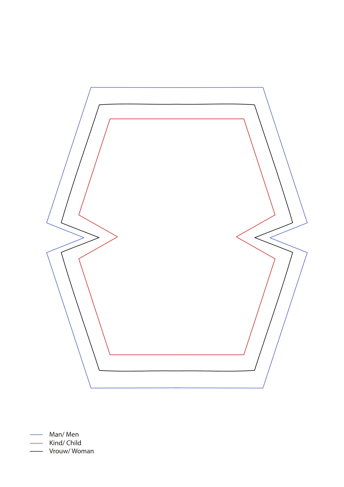
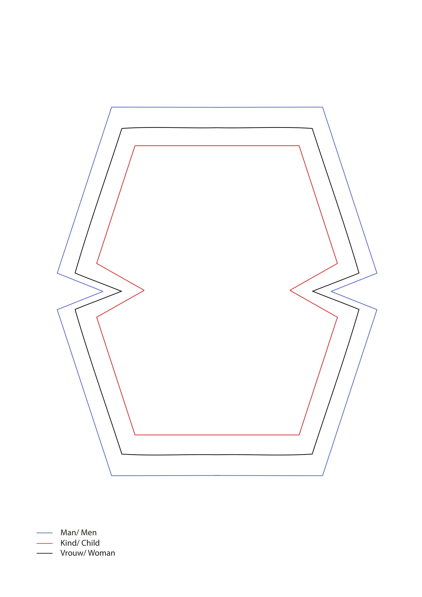

Tutorials
The following are tutorials for making mouth masks based on our research at home.
Simple mouth mask PDF guide
This mask only requires simple materials and equipment available at home


The following are tutorials for making mouth masks based on our research at home.
This mask only requires simple materials and equipment available at home
This mask is suited for replaceable filters and requires the use of a sewing machine.

Click on the pictures for a printable version of the patterns.
 
